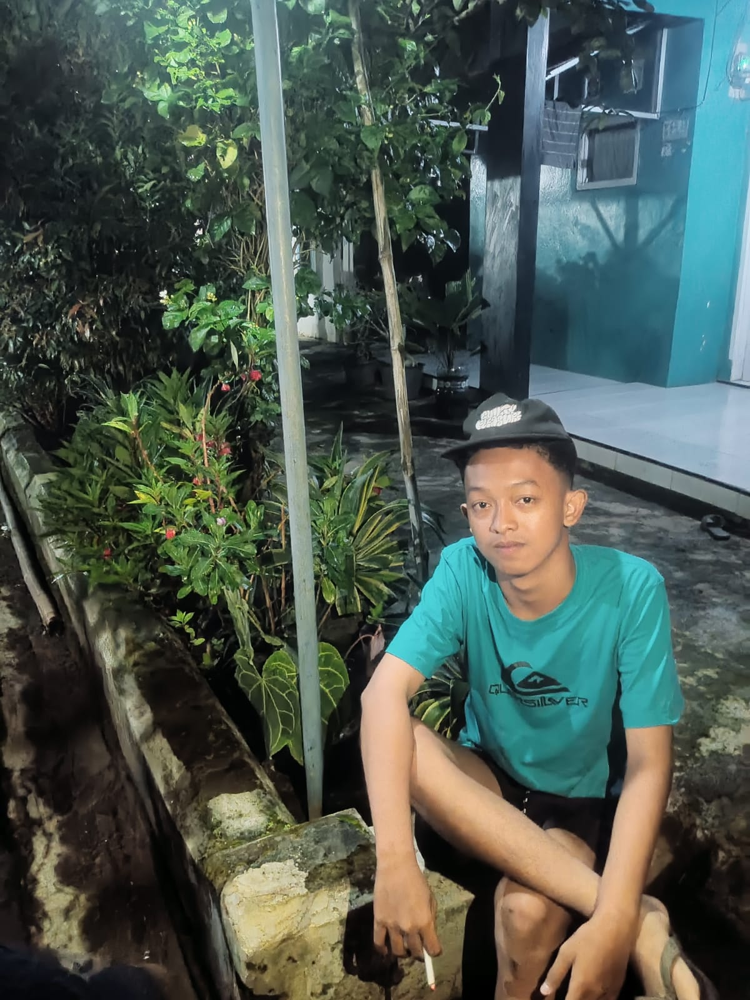

"Selamat datang! Saya senang mengeksplorasi teknologi baru, berkolaborasi, dan menciptakan solusi dari setiap ide yang ada."
Jelajahi Profil"Saya adalah sosok yang berdedikasi, bersemangat tinggi, dan mudah beradaptasi. Saya meyakini bahwa kolaborasi yang solid serta kemauan untuk terus belajar adalah fondasi untuk mencapai kesuksesan."
"Deretan keterampilan teknis yang terus saya tingkatkan melalui praktik langsung dan eksplorasi berkelanjutan."
"Hobi dan aktivitas yang membantu saya melepas penat, mendapatkan sudut pandang baru, serta menjaga produktivitas."